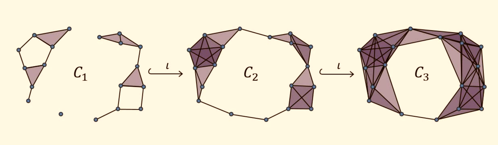

Any collection of points in space may (noisily) take on a "shape" which a data scientist would want to learn and understand. Of course, any point cloud can be considered a topological space with an obvious discrete topology endowed, but this does lend much insight. Instead, one often wants to "thicken" such a space to one with a less trivial topology. It turns out to be difficult to do this in a canonical way, but it is possible if one decides to fix a given scale parameter \(r > 0\). This allows us to construct many different types of thickenings (e.g. Cech Complex, Vietoris-Rips Complex, Alpha Complex, etc.)
In the most general case, we can resolve the issue of not being able to choose a single canonical scale parameter by instead letting the scale parameter take on a range of values and checking the shape of the thickening at every scale. Here we can track which shapes persist and which shapes die during this process. The insight is that if a shape persists for many values of the scale parameter, then that shape must be more essential to the shape of the point cloud. This theory is known as persistent homology, and forms the basis for topological data analysis,
 |
The persistence of each shape in a space \(X\) is usually described by the persistence barcodes of \(X\), denoted \(PH(X)\). Essentially, the barcodes track the lifetime of each shape, so one can see which shapes were the most important to the point cloud.